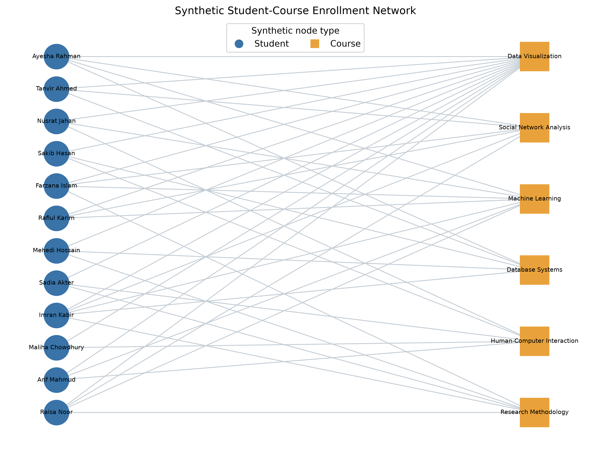

Objective and data source
The exercise reuses the required teaching definition and saves every calculated
artifact through the deterministic Python pipeline. Relevant data:
data/generated/enrollments.csv.
Scope: The Facebook dataset is used for the empirical
analysis. This mandatory network exercise uses the supplied or explicitly synthetic
relationship data because the Facebook table has no verified user-to-user edges.
Verified result
Data Visualization has 12 enrollments; Imran Kabir takes 5 courses.

Python implementation
def load_student_course_graph(
output_dir: Path = DATA_GENERATED,
) -> tuple[nx.Graph, pd.DataFrame, pd.DataFrame, pd.DataFrame]:
"""Build the bipartite graph from stored CSV files."""
students = pd.read_csv(output_dir / "students.csv")
courses = pd.read_csv(output_dir / "courses.csv")
enrollments = pd.read_csv(output_dir / "enrollments.csv")
graph = nx.Graph(name="Synthetic student-course enrollment")
for record in students.to_dict(orient="records"):
graph.add_node(
record["student_id"],
node_type="student",
bipartite=0,
label=record["student_name"],
major=record["major"],
)
for record in courses.to_dict(orient="records"):
graph.add_node(
record["course_id"],
node_type="course",
bipartite=1,
label=record["course_name"],
department=record["department"],
)
graph.add_edges_from(enrollments.itertuples(index=False, name=None))
return graph, students, courses, enrollments
def student_course_findings() -> tuple[pd.DataFrame, dict[str, Any]]:
"""Calculate degree findings for the stored synthetic bipartite dataset."""
graph, students, courses, _ = load_student_course_graph()
if not nx.algorithms.bipartite.is_bipartite(graph):
raise ValueError("Student-course graph is unexpectedly not bipartite")
records = []
for node, degree in graph.degree():
attrs = graph.nodes[node]
records.append(
{
"node_id": node,
"label": attrs["label"],
"node_type": attrs["node_type"],
"degree": degree,
"major_or_department": attrs.get("major", attrs.get("department")),
}
)
summary = pd.DataFrame(records).sort_values(
["node_type", "degree", "node_id"], ascending=[True, False, True]
)
summary.to_csv(TABLES / "student_course_degree_summary.csv", index=False)
course_summary = summary[summary["node_type"] == "course"]
student_summary = summary[summary["node_type"] == "student"]
popular = course_summary.loc[course_summary["degree"].idxmax()]
most_courses = student_summary.loc[student_summary["degree"].idxmax()]
return summary, {
"is_bipartite": True,
"students": int(len(students)),
"courses": int(len(courses)),
"enrollments": graph.number_of_edges(),
"most_popular_course": popular["label"],
"most_popular_course_enrollments": int(popular["degree"]),
"most_enrolled_student": most_courses["label"],
"most_enrolled_student_courses": int(most_courses["degree"]),
"bipartite_density": float(
nx.algorithms.bipartite.density(graph, students["student_id"].tolist())
),
"mean_courses_per_student": float(student_summary["degree"].mean()),
"mean_students_per_course": float(course_summary["degree"].mean()),
"course_degrees": [
{"course": row["label"], "enrollments": int(row["degree"])}
for _, row in course_summary.iterrows()
],
"pattern": (
"Data Visualization bridges every represented major. Data Science "
"students also concentrate in Machine Learning and Social Network Analysis, "
"while Multimedia Technology students favor Human-Computer Interaction."
),
}
Browse complete Python source Read report section
Interpretation and limitation
The output demonstrates the requested graph representation and visual encoding.
Limitation: All people, courses, and enrollments are synthetic teaching records.